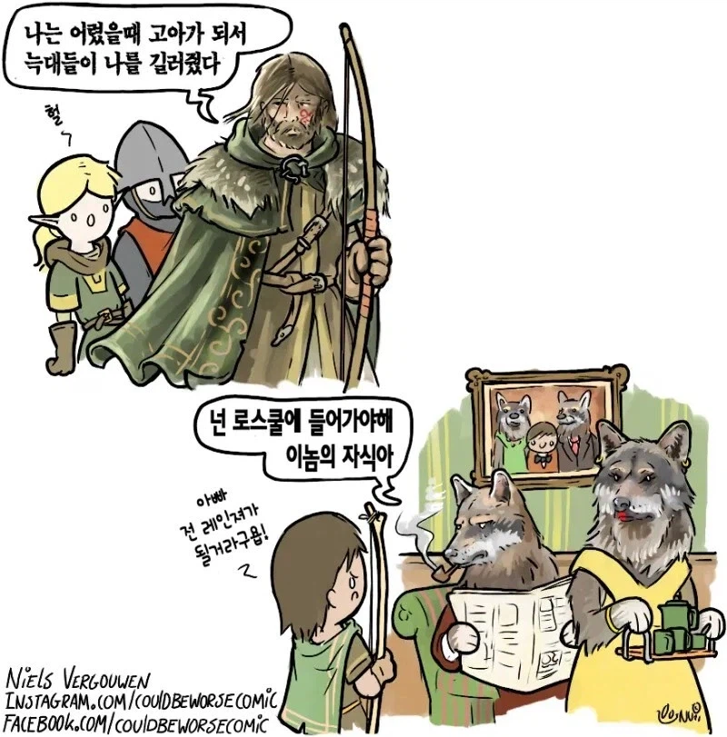
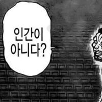

63 · 15 · 2 시간 전 · 원문

불효자슥...
수집 당시 댓글 15개
암막커튼 · 4 시간 전
돼
↳ 답글 · 수강여석이없습니다 · 4 시간 전
저러니까 변호사 안하고 냥꾼이나 됐지
↳ 답글 · 창원시진해구이동거주중 · 2 시간 전
니놈을 추격해주마
유아학교 · 4 시간 전
오 엄마늑대
↳ 답글 · 분석가 · 2 시간 전
네?
↳ 답글 · 재주꾼셰프 · 2 시간 전
↳ 답글 · 년전개그 · 2 시간 전
흠 발기할까나
↳ 답글 · 메카다나카 · 2 시간 전
↳ 답글 · Vv연옥의사신vV · 2 시간 전
↳ 답글 · 연골어류 · 2 시간 전
흥 아기늑대 밝혀 엄청
마더핸드파이 · 3 시간 전

쿠엥쿠엥 · 2 시간 전
늑대 맞지? 코볼트 아니지?
메카다나카 · 2 시간 전
견부렌쟈
차돌된장국 · 2 시간 전
로스쿨 가서 늑대가 길러줬다 할 순 없잖아
FURRY바게 · 2 시간 전
엄마...❤️사랑해요...❤️

")
돼